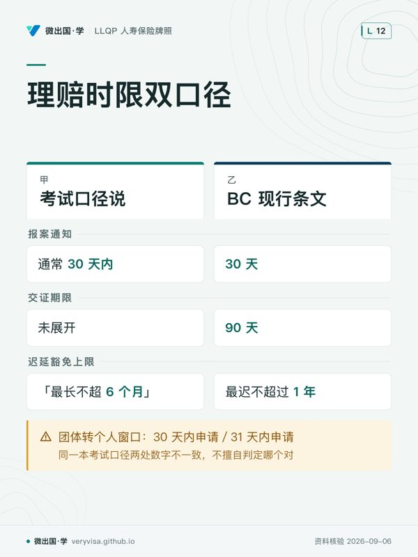

核实日期：2026-09-04｜本页首次把 A&S 保单的法定条款回源到 BC《Insurance Act》（RSBC 2012, c 1）Part 4 第 101 条「STATUTORY CONDITIONS」——此前本课的法条摘录只列出散落条号（s.92/98/99/104/111/112/113/117/118/123/124/125/126），没有点出 s.101 这一整条集中收纳的九件套。逐条出处见文末（BC Laws（Queen's Printer）（论坛解读） 至 04）。 复核周期：2027-03-01。法定条款条号本身长青（法条不常改），会变的是产品条款与市场供给，按本页第四节的口径每年复核一次即可。
0. 这一篇解决什么问题
前一篇讲完了客户画像——数字问出来了、缺口算出来了。这一篇接着往下走，横跨考纲两个能力组件：c3「落实推荐」（占本模块 25%）与c4「保障期内服务」（占 10%）。它讲四件前几篇没讲的事：① 代理人把画像结论变成一份具体推荐时，有哪六步动作、哪三个杠杆最能左右保费；② 一份 A&S 合同从申请到承保、从交付到理赔，法律规定了哪些硬性条款——这些条款不是考试口径泛称的「provincial insurance acts」，而是 BC 现行法条上白纸黑字的具体天数；③ 保单进入服务期之后，续保等级怎么决定保司能不能单方终止或涨价；④ 理赔发生时，通知、交证、付款各自的法定时限是什么，与考试口径的表述有没有对上。
这一篇帮你做到三件事：给定客户预算超支的场景，说出四种能降保费的合同修改杠杆分别牺牲了什么；给定一个理赔时限的题目，分清「30 天通知」「90 天交证」与「最长不超 1 年」这三个不同的数字分别在回答什么问题；判断一份 A&S 合同的续保等级，从而推出保司在服务期内能不能单方终止或涨价。
一、制度设计与底层逻辑：为什么"推荐"要留痕、"合同"要有法定底线
本节回答This section answers 解释推荐留痕的执业责任意义及法定条款设定合同底线的初衷Explain the professional liability significance of reason-why documentation and the legislative intent behind statutory condition consumer baselines
1. 推荐不是"卖出一张保单"，是在多个可行方案里做取舍
客户画像算出一个缺口数字之后，代理人面前从来不止一种能补上它的合同设计——等待期长短、给付期长短、残疾定义宽严、保额高低，四个维度可以有很多种组合，且几乎每一种组合都"技术上可行"。这一章制度设计的核心，是要求代理人说得出「为什么选这一种组合，不选另一种」——这份说得出的理由，本身就是代理人执业责任的证据，不是客户服务的礼貌加分项。一份没有留痕的推荐，客户几年后抱怨"保费太贵""等待期太长导致断粮"时，代理人手上如果没有一份写清楚取舍过程的记录，就只剩各执一词。
2. 谁与谁在博弈：保司的核保底线、代理人的佣金结构、客户的预算，三方拉扯
推荐环节的张力来自三方各自的立场不完全一致：保司只愿意按其核保规则承保，遇到次标准风险要么加条件要么拒保；代理人的收入通常和成交挂钩，有动机把方案往"更容易成交"的方向拉；客户的预算是硬约束，缺口再大也不会为一份负担不起的保费签字。代理人的专业价值恰恰在这个三方张力里——不是无条件满足客户"要便宜"的要求，也不是替保司省事直接拒绝调整，而是在四个合同修改杠杆里找到既过得了核保、又落在客户预算内、又尽量不牺牲核心保障的那个组合，并把每一次调整的代价讲清楚。
3. 法律后果：合同必须有法定底线，否则"看合同条款"这句话本身没有意义
如果 A&S 合同的每一条款都完全由保司自行拟定，"仔细看合同"这句常见的消费者忠告会失去大半意义——保司完全可以把通知期写成 3 天、把理赔时限写成"保司自行决定"。这正是 BC《Insurance Act》Part 4 用一整条 s.101「STATUTORY CONDITIONS」（法定条款，九条）为几乎所有个人 A&S 合同设定强制性底线的理由：法定条件的效力及可省略、变更范围须合读 s.101–102；s.106 的续期保费宽限期另有至少 30 天规定，不属于九条内部的一条。这条底层逻辑决定了本篇与前几篇的一个关键区别——前几篇讲的多是"考试口径通则、行业惯例"，这一篇能讲出具体条号，是因为它真的有具体条号可查。
ℹ️
「考试口径通则」与「省法条文」不是同一个可信度
考试口径 ch07 全篇反复用"provincial insurance acts require…"这类泛称，从未点名任何一省的具体条号——这不是考试口径写错了，是它按全国通则写。本页第二节把这些泛称一一对上 BC 现行条号，正是本模块北极星推论 1（"考试口径是结构、不是真相，回官方现行源自建内容"）在这一章最直接的落地。
二、2026 现行政策与数字：s.101 九条法定条款逐条对表
本节回答This section answers 掌握法定条款的报案、交证、终止、职业变更与受益人规则Master statutory rules governing notice of claim, proof of claim, insurer termination, occupational changes, and beneficiary designations 本章考题 2Question 2 本章考题 3Question 3
s.101 明确排除团体及债权人团体合同。s.102 允许在特定情形省略或调整条件，不能把 Condition 4 写成所有不可撤销合同均可被保险人单方终止；本页以下为适用合同的法定基线。
Condition 1 将申请书、保单、签发时附件与后来书面同意的修订列为完整合同，代理人无权改约或豁免条件；Condition 2 限制保险人援引未写入申请或书面可保性证据的投保陈述。
1. 法定条款逐条表：考试口径通则 vs BC 现行条号 vs 机制 vs 考点
| 条款 | 考试口径通则怎么说 | BC 现行条号 | 机制 | 考点 |
|---|---|---|---|---|
| 理赔通知 | 通常要求"及时"报案，未给具体天数 | s.101 Condition 5(1)(a) | 须在索赔发生后 30 天内书面通知保司 | 30 天是通知的法定时限，不是交证的时限——两者常被误记成同一个数字 |
| 理赔交证 | 未点名具体天数 | s.101 Condition 5(1)(b) | 须在索赔发生后 90 天内提交书面证明（收据、诊断证明等） | 90 天是给"完整证据"的期限，比 30 天通知期长，两项均从索赔产生日起算，不能先等 30 天再另加 90 天 |
| 迟延豁免 | 考试口径 §7.5.1 写"通常 30 天内报案、最长不超 6 个月" | s.101 Condition 5 迟延豁免条款 | 未按上述两个时限办理，须证明原期限内办理在客观上不合理可行，并尽快补办，通常最迟不超过事故发生（或疾病/伤残索赔产生）后 1 年；须推定死亡宣告的，另按宣告日起 1 年，不因逾期直接丧失理赔权 | 考试口径的迟报"6 个月"不是此项救济的法定上限——条文写的是"1 年"，这是本页发现的考试口径数字与现行法条不一致的新例证；考场按题干或考试口径作答，柜台执业按法条"1 年"为准 |
| 续保与终止 | 泛称"provincial insurance acts" | s.101 Condition 4 | 保司终止个人合同须至少 15 天挂号信通知或 5 天亲自送达通知；挂号信期间从挂号信或其通知送达被保险人邮政地址当日起算；投保人可随时单方终止 | 这条也管理"保司能不能不续保"——见下表续保等级如何在合同里加码或放弃这条权利 |
| 职业变更 | 泛称"须告知职业变化" | s.101 Condition 3 | 转入更高风险职业后，给付按原保费在新职业费率下能买到的额度折算，不是直接拒赔 | 常见误答是"隐瞒职业变化即无效"——实际是按比例折算，不是一刀切 |
| 误报 / 不可抗辩期 | 泛称"须如实告知重大事实" | s.111（披露义务）+ s.112（不可抗辩期 2 年） | 与人寿险 s.51/52 结构完全对应：一般非欺诈保护以相关保险有效两年为基础；头两年内已发生损失或开始伤残的索赔依s.112(3)/(4)有例外。团体专门索取的可保性证据另依s.112(2)核两年生存期间 | 与本模块 c2 反复出现的"重大事实披露"是同一件事在 A&S 合同上的法律条文 |
| 宽限期 | 泛称"给一段宽限期" | s.106 | 30 天（或合同约定更长期限，取更长者） | 适用于首期之后的保费；寿险 s.50 同样允许合同约定更长期限，不能据此制造险种差异 |
| 复效 | 不把寿险窗口移植到 A&S | s.113 管复效时不告知/误述；Part 4 未规定与 s.57 相同的普遍复效权 | 合同决定恢复条件，法规仍约束恢复后的抗辩 | 区分“无法定统一窗口”与“完全无法条” |
| 受益人指定 | 泛称"可指定受益人" | s.117（指定）+ s.118（不可撤销须在被保险人生存期间向保险人加拿大总部或主要办事处提交非遗嘱指定） | 与人寿险 s.59/60 结构对应 | 不可撤销受益人指定必须送达保司才生效，光在申请表上写"不可撤销"四个字不够 |
✕
迟报救济不能一概套用考试口径的六个月
考试口径的 6 个月不能代替 BC s.101 Condition 5(2) 的条件性迟报救济。原定 30/90 天内办理不合理可行、之后尽快办理及法定上限须同时核对；死亡推定另有宣告日起算规则。本文不推测考试口径 6 个月的历史来历，也不以“通常惯例”替代法规。
2. 考场与现行对照表：理赔时限，考场答什么、柜台按什么办

| 考试口径 2022 说 | BC 现行条文（2026-09-01 版本） | 考场答 · 柜台做 | |
|---|---|---|---|
| 报案通知 | 通常 30 天内 | s.101 Condition 5(1)(a)：30 天 | 一致，两边都答 30 天 |
| 交证期限 | 未展开 | s.101 Condition 5(1)(b)：90 天 | 考场若给出具体天数以题干为准；柜台按 90 天执行 |
| 迟延豁免上限 | "最长不超 6 个月" | s.101 Condition 5：最迟不超过 1 年 | 考试口径练习保留其六个月说明；若题干指定 BC 法，须按法条条件作答。实务的一年不是可自由延报的期限——这是本页找到的第二处考试口径与现行法数字不一致，须双口径并列，不擅自替换考试口径原句 |
3. 考场与现行对照表：团体转个人窗口，30 天还是 31 天
| 考试口径 ch02 §2.3.3.3 | 考试口径 ch07 §7.4.4 | 考场答 · 柜台做 | |
|---|---|---|---|
| 转换窗口天数 | 30 天内申请 | 31 天内申请 | 同一本考试口径两处数字不一致，不擅自判定哪个对；考场遇到具体天数的题目，以题干给出的数字为准，不要背考试口径某一处的数字；柜台执业时以客户手上的团体计划条款或转换权说明文件为准 |
| 免核保上限 | 未展开 | 未展开 | 考试口径未给这一章的免核保上限数字，柜台需另行核实该客户所在团体计划的条款 |
ℹ️
人寿险模块的类似案例，能不能直接套用到这里
本课 life 模块也有一处几乎一模一样的考试口径内部矛盾（：团体寿险转换窗口，ch06/ch10 写 31 天、ch12 写 30 天），并且已经用两家保司的官方团体寿险转换说明文件交叉核对出 31 天更可靠。但那是「团体寿险」转个人险的产品线，不是这里的「团体 A&S（伤残/健康）」转个人险——两者受不同的行业指引与合同条款约束，本页不能未经验证就把 life 模块那条结论直接搬过来用。判断方法：柜台执业时永远回客户手上那份具体计划的转换权说明文件，不要用另一个险种模块查到的天数替代。
三、实务流程：从推荐到理赔的四条链
本节回答This section answers 掌握推荐六步、四种降费杠杆、三种续保等级及理赔付款节奏Master the six recommendation steps, four premium reduction levers, three renewability tiers, and claims payment schedules 本章考题 1Question 1
1. A&S 推荐六步
代理人拿到画像结论之后，走完以下六步才算完成一次可留痕的推荐：
| 步骤 | 要做什么 | 最容易漏掉的一点 |
|---|---|---|
| ① 明确推荐基础 | 把测算出的缺口对应到具体产品线（收入替代型 DI、一次性给付型 CI、报销型 LTC 或扩展医疗），说明为什么是这一类而不是另一类 | 客户预算紧张时，代理人容易跳过"为什么是这个产品"直接进入报价，留痕记录里缺了这一步的理由 |
| ② 保费调整杠杆 | 客户预算不够时，用延长等待期／缩短给付期／降低保额／改换合同性质（如从保证续保改为可撤销续保）四种方式之一或组合降费 | 不能只报一个降费方案就让客户签字——四个杠杆牺牲的东西完全不同，必须讲清楚代价，见下表 |
| ③ 非标准风险的核保修饰 | 客户健康或职业属次标准风险时，保司常用除外、限制、加费、免赔额四种方式之一（或组合）承保而非直接拒保 | 客户容易把"加了除外条款"理解成"被拒保了一部分"——实际是保司愿意承保，只是把特定风险排除在外，这是两回事 |
| ④ 报价呈现 | 给客户看单一方案，还是两个可比方案，取决于客户处境是否明确；处境不明确时给两个方案更利于留痕"客户是知情选择的" | 只给一个"标准答案"式方案，客户事后若后悔，代理人拿不出"曾经权衡过其他选项"的证据 |
| ⑤ 留痕记录 | 把①-④的判断过程与客户的回应写成书面记录（产品对比表、推荐理由、客户签字确认） | 这一步最容易被简化成"你签字这里就行"，而这恰恰是留痕最重要的一步——参见 life 模块「reason-why 记录」，A&S 推荐同样适用这套逻辑，不限于换单场景 |
| ⑥ 呈现互补保单并按需修订 | 一份需求若同时含两种截然不同的持续期或触发条件（例如企业固定开支保障与员工个人收入保障），拆成两份保单分别满足，而不是勉强用一张合同覆盖两种需求；后续客户处境变化时主动提出修订 | 勉强凑单往往意味着其中一份需求的等待期或给付期被迁就了不属于它的那一份，两边都不精确 |
2. 「定义 / 等待期 / 给付期」三处最贵：取舍表
A&S 合同里对保费影响最大的不是保额本身，而是这三个维度怎么定义：
| 维度 | 更贵的选择 | 更省的选择 | 代理人取舍要点 |
|---|---|---|---|
| 残疾定义 | 本职定义（own occupation）——只要不能履行本职业的主要职责就算残疾，即便转行做别的工作收入更高仍可持续给付 | 任何职业定义（any occupation）——须无法从事任何与教育、训练、经验相匹配的工作才算残疾 | 高收入专业人士（外科医生、律师）愿意为本职定义多付保费，因为他们的职业转换成本最高；预算有限的客户可以接受更严的定义换低保费，但要讲清楚"转行后可能拿不到给付"的代价 |
| 等待期（elimination period） | 短等待期（如 30 天）——保费更贵，因为保司更早开始承担给付责任 | 长等待期（如 90 或 120 天）——保费更省，但客户要靠自己的应急资金或团体 STD 撑过这段空窗 | 已有团体 STD 垫底的客户可以选长等待期省保费；自雇者没有团体计划垫底，等待期就是必须靠现金流硬扛的那段时间，不宜一味追求低保费而选过长等待期 |
| 给付期（benefit period） | 长给付期（如到 65 岁）——保费显著更贵，尤其叠加本职定义时 | 短给付期（如 2 或 5 年）——保费更省，但残疾若持续更久，给付期满后收入来源直接断档 | 给付期与等待期互不冲抵（本课 l05 反直觉考点已讲），选短给付期本质是把"残疾持续超过给付期"这段风险留给客户自己承担，代理人须明确告知这一点 |
⚠️
四个降费杠杆里，"改换合同性质"最容易被低估代价
把保证续保（guaranteed renewable）改成可撤销续保（cancellable）确实能立刻降保费，但代价不是"以后可能贵一点"，而是保司此后每个续保周期都有权依 s.101 Condition 4 单方终止或拒绝续保（见下表）——这不是保费波动，是保障本身可能在客户最需要它的时候（健康转差、刚出险过一次）被合法收回。这个杠杆该放在四选一里最后考虑，而不是因为它降费效果最直接就优先推荐。
3. 三种续保等级在服务期内怎么变
保单卖出去之后，s.101 Condition 4（保司可 15 天挂号信 / 5 天亲送通知终止合同）是法定默认值，但不同续保等级的合同条款会加码限制、甚至完全放弃保司这项权利：
| 续保等级 | 保司在服务期内能否单方终止 / 涨价 | 与 s.101 Condition 4 的关系 |
|---|---|---|
| 不可撤销（non-cancellable） | 不能终止，也不能个别或整体涨价——保费与条款在承保时即锁定至到期年龄 | 合同条款完全放弃了 Condition 4 赋予保司的终止权，保费溢价正是买这份放弃 |
| 保证续保（guaranteed renewable） | 不能终止，但可以按同一费率分类的整批客户调整保费（不能针对个人单独涨价） | 合同条款在约定保证续保期内限制不续保，分类调价另依合同，不是保留部分任意终止权 |
| 可撤销 / 有条件续保（cancellable / conditionally renewable） | 可撤销合同的终止须核适用 Condition 4；有条件续保仅可在约定条件出现时不续保，不能等同任意撤销 | 应区分两种续保承诺，并核 s.102 与实际合同 |
代理人在推荐环节选了哪一个续保等级，等于在服务期内替客户预先决定了"保司还能不能反悔"这件事——这也是为什么第二节表格里 s.101 Condition 4 既是合同成立时的条款，也是服务期内随时可能被触发的条款。
4. 理赔链：从通知到付款，五步加一条"先行给付"的节奏
理赔通知与交证均从索赔产生日起算：通常分别为 30 天与 90 天。保险人可在合理范围内要求检查。依 s.101 Condition 9，误工首笔给付在收到证明后 30 天内支付，此后仍负给付责任且按要求提供持续伤残证明时，支付不得低于每 60 天一次。这项节奏不等于要求保险人在承保责任尚未成立时先行预付。Condition 6 还要求保险人收到通知后15天内提供交证表格，未提供时可按条文书面提交事件及损失证据；Condition 8 对误工以外的保险金规定收到证明后60天内支付。
四、2026 市场：A&S 推荐到理赔的代理人动作表 + 团体转个人 31 天窗口实务
本节回答This section answers 对齐商业买断与开支险的触发条件，并核实团体转个人条款文件Align trigger conditions for disability buyout and overhead expense coverage, and verify group-to-individual conversion plan documents
以下产品与机制沿用 企业伤残险三件套：营业费用险（BOE）、关键人伤残与买卖协议买断（企业 A&S 三件套）介绍过的现行保司资料；只讲机制，不列促销数字。
RBC Insurance：官方 BOE 产品另有费用报销保障页面；不能把 Professional Series 指南的企业产品组合自动视为该DI的附加责任；旗下伤残买断险面向 2–5 名合伙人的合伙企业/专业公司在售，等待期最短 360 天，给付可选一次性、60 期月付或组合（RBC Insurance）。它对应本篇哪一步：买断险的等待期须与买卖协议约定的触发条件（如"伤残满 6 个月即触发"）严格对齐，正是本篇第三节"推荐六步"里步骤①"明确推荐基础"的现行例证——等待期不是随便选一个数字，是回推协议条款倒算出来的。
Canada Life：官网确认其个人 DI 产品线内设有面向私人企业主/合伙人的方案，给付可用于买断因伤残丧失工作能力的股东股份（Canada Life），同页另提及可覆盖企业营运开支（Canada Life）。它对应本篇哪一步：企业主客户的推荐往往同时触及"个人收入保障"与"企业固定开支保障"两个不同持续期的需求，是本篇第三节步骤⑥"呈现互补保单"的现行例证。
iA Financial Group：Superior Program / Acci-Jet Program 官方资料列有营业费用用途，应核实际计划的费用定义、限额与等待期。历史 Manulife 产品停售信息缺对应保险人公告，此处不列精确停售日期或据此推断市场只剩几家。
团体转个人 31 天窗口实务：本课已用两家主要保司的官方团体寿险转换说明文件与一所 BC 高校的官方 HR 页面交叉核对出 31 天更可靠（Canada Life（The Canada Life …、Manulife（The Manufacturers L…、UBC Human Resources（不列颠哥伦比亚大…）——但如第二节那个「注」框所述，这三份材料核的是团体寿险转换权，不是本章讨论的团体 A&S（伤残/健康）转换权。代理人在柜台遇到客户离职、要办理团体 A&S 转个人险时，正确动作是：① 找到客户手上那份团体计划的转换权说明文件或雇主 HR 提供的条款摘要，② 按文件写明的天数（可能是 30、可能是 31，也可能是完全不同的数字）执行，不要凭印象套用寿险模块查到的 31 天，③ 若客户拿不到条款文件，按更保守的天数（较短的那个）提醒客户尽快申请，避免因窗口误判错过免核保资格。
五、历史变革：从"保司想怎么写就怎么写"到九条法定底线
本节回答This section answers 理解法定条款立法传统、A&S 复效披露规则及理赔付款法定底线Understand statutory condition legislative history, A&S reinstatement disclosure rules, and statutory baselines for claims payments
其一，法定条款制度本身不是这几年新写的。 BC 现行的《Insurance Act》是 RSBC 2012, c.1，此前是 RSBC 1996, c.226——两次重新编纂改变了条号，但"用一整条法定条款为个人 A&S 与人寿合同设定强制性底线"这套制度安排本身，源自更早期各省协调统一保险立法的传统，历经多次重编，九条法定条款的实质内容相对稳定。这解释了为什么人寿险的 s.50/52/57 与 A&S 的 s.106/112 在结构上几乎一一对应——它们本来就是同一套立法传统在两类合同上的平行产物。
其二，复效权利与复效后的不告知后果要分开。 A&S Part 4 未给出与寿险 s.57 相同的普遍复效权及窗口，具体恢复条件应看合同；但 s.113 使 s.111–112 适用于复效及复效所作披露；两年期间从复效日起算，并适当调整，不只管增加的保险额，不能说 A&S 法律完全没有复效条文（BC Laws（Queen's Printer）（论坛解读））。
其三，理赔付款节奏被写进法律，是消费者保护从"信保司自觉"转向"设最低标准"的直接体现。 s.101 Condition 9 强制保司在收到交证后 30 天内首付、此后每 60 天至少续付一次——这条节奏如果只是行业自律指引，保司完全可能以"案情复杂需要更多时间"为由无限期拖延正在给付中的案件。把它写成法定条款，客户遇到保司拖延付款时就有明确的法条依据可以主张，而不是停留在"投诉信"层面的软约束。
六、案例：三个最容易在柜台上说错的推荐与合同场景
本节回答This section answers 辨析交付与生效条件、团体转个人文件核查及迟报案救济Distinguish delivery and policy formation rules, group conversion document verification, and late notice claim relief 本章考题 4Question 4
案例 A：Colm 的交付面谈——先辨险种及合同生效条件
维多利亚自雇木工 Colm 申请个人 DI，核保通过但尚未交付。他告诉代理人最近发现血压偏高。代理人应检查申请书、承保通知、暂保安排及交付指示，并把新增资料交保险人处理。BC 寿险 s.39 的默认交付、首期保费及可保性条件不能直接移植到 A&S；A&S s.106(1) 另规定，保单已交付时，即使首期保费未付，合同也约束保险人，保费仍可追偿。尚未交付是否已有暂时保障，必须读实际文件，不能只凭尚未缴费就判为无保障。
适用规则：新健康资料由保险人按申请及合同处理，代理人不能自行承诺已保或不保。本例假设保险人要求进一步核保后另出加费条件，客户再决定是否接受。交付后的审阅退保期限须核产品文件，考试口径常见十天只作示例；客户反悔权不能替代生效条件，也不能倒过来否认已经依法生效的责任。
案例 B：Desmond 离职——31 天窗口该看哪一份文件
素里的电信技术员 Desmond 从雇主的团体计划离职，团体伤残保障即将终止，他想尽快转成个人保单以保住免核保资格。代理人没有直接告诉他"31 天内办"，而是先找出 Desmond 手上那份团体计划的转换权说明文件——文件写的是该雇主计划约定 30 天，与常见的 31 天惯例不同。
适用规则：考试口径内部对这一窗口的天数本身就不一致（ch02 写 30 天、ch07 写 31 天），且这是团体 A&S 而非团体寿险，不能套用寿险模块查到的行业惯例数字。结果：代理人按 Desmond 那份文件的 30 天执行，提前两天提醒他准备申请材料，避免卡在最后一天才递交。常见错法：代理人凭记忆背了一个"行业惯例是 31 天"的数字直接告诉客户，没有核实这位客户具体计划的条款文件——不同雇主的团体计划、不同险种（寿险 / A&S），窗口天数完全可能不一样。
案例 C：Camille 的迟报案——30 天通知期不是绝对期限
本拿比的自由译者 Camille 在一次意外中受伤，假定因住院期间失去处理事务能力，直到第 45 天恢复处理能力后立即通知保险人，超过了 s.101 Condition 5 的 30 天法定通知期。她一度以为自己已经彻底丧失了这次理赔的资格。
适用规则：s.101 Condition 5 的迟延豁免条款明确写着，须证明原期限内办理并非合理可行，之后尽快补办，并遵守通常 1 年的上限，逾期本身不导致理赔无效。结果：代理人协助 Camille 在第 45 天补交通知，同时提交住院及能力受限证明；能否适用救济须审查原期限内不合理可行、此后尽快办理及法定上限，不能仅因不足一年或非故意就保证保留资格。常见错法：把 30 天当成一道"过期即失权"的绝对红线——这正是本页第二节标出的考试口径"6 个月"与法定"1 年"两个数字都不该被误读为"逾期即彻底丧失理赔权"的地方；30 天与 90 天是法定时限；1 年是满足客观原因等条件后的补救上限，不能预先当作自由延长期。
七、考试陷阱与考场与现行对照清单
本节回答This section answers 汇总八大高频考试陷阱与三项考场及柜台双口径差异Summarize eight high-frequency exam traps and three critical exam-benchmark versus current-rule discrepancies
以下每条对应 CISRO 公开样题中"合同交付""法定条款""复发/理赔"相关题目的考点与陷阱形态，按版权边界只写形态，不复述题干。
-
混用寿险与 A&S 生效规则。BC 寿险 s.39 不能直接套用个人 DI；已交付 A&S 保单的首期未付情形须核 s.106(1)，审阅退保期另依产品文件。
-
理赔时限的三个数字用混（数字混淆）。30 天通知、90 天交证、迟延豁免最长 1 年，是三段不同的时限，考试口径的"6 个月"说法与本页核实的法定"1 年"不一致，须区分考场口径与柜台口径。
-
只凭交付与缴费状态判断保障。未交付可能另有符合条件的暂保；已交付 A&S 也不能因首期未付便认定无效。先核险种法规与具体文件。
-
职业变更等同拒赔（后果误判）。转入更高风险职业不导致直接拒赔，是按原保费能买到的新职业费率折算给付额度，属于比例调整而非一刀切。
-
把 A&S 复效套用人寿险的 30 天 / 2 年框架（跨险种套用）。人寿险 s.57 有法定复效条款，A&S 无对应的统一法定复效窗口，恢复条件看合同，复效时不告知仍受 s.113 约束，题干若问 A&S 复效期限，答案必须来自题干给定的合同条款。
-
团体转个人窗口天数不核实条款文件、凭印象作答（数字来源错误）。考试口径本身 ch02/ch07 两处数字不一致（30 vs 31），且团体寿险与团体 A&S 的行业惯例天数不能互相套用。
-
保证续保等同不可撤销（等级混淆）。保证续保下保司仍可按整批分类调价，只是不能针对个人单独涨价或终止；不可撤销才是保费与条款完全锁定。
-
保司必须等案件完全了结才付第一笔理赔款（流程误解）。s.101 Condition 9 要求交证后 30 天内首付、此后每 60 天至少续付一次，只要仍在给付责任期内，保司不能拖到彻底调查完毕才开始付款。
考场与现行对照清单（考场 vs 柜台）：① 理赔迟延豁免上限——考试口径练习保留六个月，题干指定BC法规则按法定条件，柜台执业按 BC 现行 s.101 的"1 年"为准；② 团体 A&S 转个人窗口天数——考场按题干或考试口径给定数字作答，柜台一律回该客户具体计划的条款文件，不套用任何模块查到的行业惯例数字；③ 复效——考场若题干未特别说明，按"合同条款约定"作答（不套用人寿险的法定框架），柜台以保单本身条款为准。
边学边测：本章题库共 32 / 13，覆盖三层难度与至少三道情景判断题。
术语双语表
| en | zh | 一句机制 |
|---|---|---|
| statutory conditions | 法定条款 | BC《Insurance Act》Part 4 s.101 为个人 A&S 合同设定的九条强制性底线，合同可以更优惠但不能更苛刻 |
| notice of claim | 理赔通知 | 索赔发生后须在 30 天内书面通知保司（s.101 Condition 5(1)(a)） |
| proof of claim | 理赔交证 | 索赔发生后须在 90 天内提交完整书面证明（s.101 Condition 5(1)(b)） |
| late notice relief | 迟延豁免 | 原期限内办理不合理可行时须尽快补办，并遵守法定上限 |
| right of examination | 检查权 | 保司可要求对被保险人进行体检，且可合理频率反复要求（s.101 Condition 7） |
| change of occupation clause | 职业变更条款 | 转入更高风险职业后给付按原保费能买到的新职业费率折算（s.101 Condition 3） |
| termination of insurance | 合同终止条款 | 保司终止个人合同须 15 天挂号信或 5 天亲送通知（s.101 Condition 4） |
| grace period（A&S） | 宽限期（A&S 版） | 30 天，或合同约定更长期限（取更长者，s.106） |
| incontestability period（A&S） | 不可抗辩期（A&S 版） | 非欺诈保护须核两年期间、期间内损失/伤残例外；团体另核s.112(2)（s.112） |
| reinstatement（A&S） | A&S 复效 | 与人寿险 s.57 不同，恢复条件看合同，s.113 另管复效时不告知 |
| irrevocable beneficiary（A&S） | 不可撤销受益人（A&S 版） | 须书面申报在被保险人生存期间向保险人加拿大总部或主要办事处提交非遗嘱指定（s.118） |
| non-cancellable | 不可撤销续保 | 保费与条款锁定至到期年龄，保司完全放弃 Condition 4 终止权 |
| guaranteed renewable | 保证续保 | 不能个别涨价或终止，但可按同一分类整批调价 |
| cancellable / conditionally renewable | 可撤销 / 有条件续保 | 两种安排不同：有条件续保须核约定触发条件；可撤销合同另核适用终止条款 |
| elimination period | 等待期 | 残疾发生到给付开始之间的空窗，越短保费越贵 |
| benefit period | 给付期 | 给付持续的最长时间，与等待期互不冲抵 |
| managing premiums（四种降费杠杆） | 保费调整杠杆 | 延长等待期／缩短给付期／降低保额／改换合同性质，四选一或组合使用 |
| exclusion / limitation / rating / deductible | 除外 / 限制 / 加费 / 免赔额 | 次标准风险的四种承保修饰方式，用于承保而非直接拒保 |
| reason-why record（A&S 场景） | 推荐留痕记录 | 把"为什么推荐这个方案"写成书面记录，不限于换单场景，A&S 推荐同样适用 |
| payment of claims | 理赔付款期限 | 误工给付依 Condition 9 在收到证明后30天内首付，持续责任期间至少每60天续付；其他保险金依Condition 8在收到证明后60天内支付 |
本页的适用边界
s.101 九条条件及 s.102 的省略/变更规则已核官方正文（BC Laws（Queen's Printer）（论坛解读））。团体 A&S 转个人的条件依具体计划，不能套团体寿险 31 天。本文没有承诺遍历 Part 4 后已识别全部跨险种差异。
来源
- BC Insurance Act (RSBC 2012, c 1) Part 4 s.101 Statutory Conditions 5/9——BC Laws（Queen's Printer）（论坛解读），抓取日 2026-09-04
- BC Insurance Act Part 4 s.101 Statutory Conditions 3/4——BC Laws（Queen's Printer）（论坛解读），抓取日 2026-09-04
- BC Insurance Act Part 4 s.101–102 与 s.113 复效不告知专项核查——BC Laws（Queen's Printer）（论坛解读），抓取日 2026-09-04
- RBC Insurance 个人 DI 与伤残买断险产品页——RBC Insurance（1、2），抓取日 2026-09-04
- Canada Life 商业伤残与买断产品页——Canada Life（1、2），抓取日 2026-09-04
- iA Financial Group 营业开支保障产品页——iA Financial Group，抓取日 2026-09-04
- Manulife 停售商业伤残产品线报道（Advisor.ca）——Advisor.ca（行业媒体），抓取日 2026-09-04
- HelloSafe 伤残买断险市场结构指南（二手源）——HelloSafe（比价网站），抓取日 2026-09-04
- 团体寿险转换权官方文件（Canada Life／Manulife／UBC）——Canada Life（The Canada Life …、Manulife（The Manufacturers L…、UBC Human Resources（不列颠哥伦比亚大…，抓取日 2026-09-04
-
BC Laws（Queen's Printer）（论坛解读）：Insurance Act (RSBC 2012, c 1) Part 4 — Accident and Sickness Insurance, s.101 Statutory Conditions
- rbcinsurance.com（论坛解读）：RBC Business Overhead Expense Insurance
读完了：用考题把这一章过一遍
按这个顺序做，十五分钟：先看怎么考，再看陷阱，用思维导图默写一遍骨架，最后做 7 道带逐项解析的练习；错的题自动进间隔复习。
本页知识卡
不看正文也能拿到这一节的核心内容：先看导读，再看图。点图放大，左右翻页。
- 先看先对照四行的条号和时间机制，避免把不同期限混成一个数。
- 易漏宽限期只适用于首期之后的保费；挂号信期间另有送达起算规则。
- 下一步去练习，碰到具体天数先分清通知、交证、终止。

- 先看先从三行找不同，判断题目是在考哪套口径。
- 易漏实务的一年不是可自由延报的期限；题干指定 BC 法时按法条条件作答。
- 下一步去练习，把题干里的口径标记后再选天数。